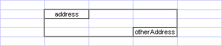
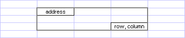
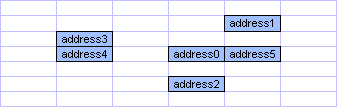
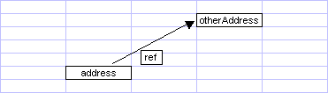
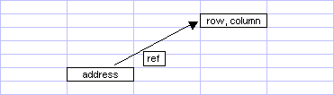
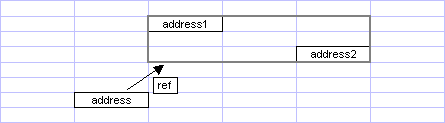
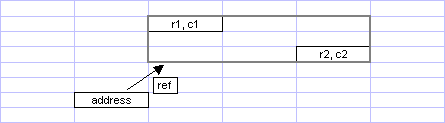
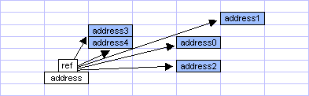

nl.fountain.xelem.Address
nl.fountain.xelem.Address
|
xelem.3.1 | |||||||||
| PREV CLASS NEXT CLASS | FRAMES NO FRAMES | |||||||||
| SUMMARY: NESTED | FIELD | CONSTR | METHOD | DETAIL: FIELD | CONSTR | METHOD | |||||||||
java.lang.Object
public class Address
A reference to the intersection of a row and a column. Besides that Address can be used to get R1C1-reference strings, which can be used in formulas and NamedRanges.
| Field Summary | |
|---|---|
protected int |
c
The column index of this address. |
protected int |
r
The row index of this address. |
| Constructor Summary | |
|---|---|
protected |
Address()
This constructor is protected. |
|
Address(int rowIndex,
int columnIndex)
Constructs a new Address. |
|
Address(String a1_ref)
Constructs a new Address. |
| Method Summary | |
|---|---|
static String |
calculateColumn(int columnNumber)
Calculates the column notation in A1-reference style of a given column number. |
static int |
calculateColumn(String s)
Calculates the column number of a given string in A1-reference style. |
static int |
calculateRow(String s)
Calculates the row number of a given string in A1-reference style. |
int |
compareTo(Object o)
Compare this addres with the specified object for order. |
boolean |
equals(Object obj)
Specifies whether the object in the parameter is equal to this address. |
String |
getA1Reference()
Translates the position of this address into an A1-reference string. |
String |
getAbsoluteAddress()
Translates the position of this address into an absolute R1C1-reference string. |
String |
getAbsoluteRange(Address otherAddress)
Gets the absolute range-address of a rectangular range in R1C1-reference style. |
static String |
getAbsoluteRange(Collection<Address> addresses)
Gets the absolute range-address of a collection of addresses in R1C1-reference style. |
String |
getAbsoluteRange(int row,
int column)
Gets the absolute range-address of a rectangular range in R1C1-reference style. |
int |
getColumnIndex()
Gets the index of the column of this address. |
String |
getRefTo(Address otherAddress)
Gets a relative reference from this address to another address in R1C1-reference style. |
String |
getRefTo(Address address1,
Address address2)
Gets a relative reference from this address to a rectanglular range in R1C1-reference style. |
String |
getRefTo(Area area)
Gets a relative reference from this address to an area. |
String |
getRefTo(Collection<Address> addresses)
Gets a relative reference from this address to a collection of addresses in R1C1-reference style. |
String |
getRefTo(int row,
int column)
Gets a relative reference from this address to a cell at the intersection of row and column in R1C1-reference style. |
String |
getRefTo(int r1,
int c1,
int r2,
int c2)
Gets a relative reference from this address to a rectanglular range in R1C1-reference style. |
int |
getRowIndex()
Gets the index of the row of this address. |
boolean |
isWithinSheet()
Specifies whether this address is within the bounds of the spreadsheet. |
String |
toString()
Returns a string representation of this address. |
| Methods inherited from class java.lang.Object |
|---|
clone, finalize, getClass, hashCode, notify, notifyAll, wait, wait, wait |
| Field Detail |
|---|
protected int r
protected int c
| Constructor Detail |
|---|
protected Address()
public Address(int rowIndex,
int columnIndex)
rowIndex - The row index of this Address.columnIndex - The column index of this Address.public Address(String a1_ref)
This constructor treats the passed string case-insensitive,
row indicators (digits) and column indicators (letters) may be intermingled.
The next equations all evaluate as true.
new Address("BQ65").equals(new Address("65bq"))
new Address("BQ65").equals(new Address("6B5q"))
etc.
a1_ref - a String in A1-reference style| Method Detail |
|---|
public static int calculateColumn(String s)
Integer.MAX_VALUE.
If no letters are present in the given string this method returns 0.
s - a string in A1-reference style
public static String calculateColumn(int columnNumber)
Integer.MAX_VALUE returns
"FXSHRXW".
It may be interesting to know that a parameter of 1000
returns "ALL" and that multiplying this parameter with a factor
of 676.149 yields the dutch translation: "ALLES".
Unfortunately not all words can be translated using the same factor and
a more practical use then of this method is to feed it column numbers
of 1 to 256 inclusive and get the Excel label of the column,
"A" to "IV" inclusive, in return.
columnNumber - the column number to be calculated
public static int calculateRow(String s)
s - a string in A1-reference style
public int getRowIndex()
public int getColumnIndex()
public boolean isWithinSheet()
true if this address is within the bounds of
the sheet, false otherwisepublic String getA1Reference()
public String getAbsoluteAddress()
public String getAbsoluteRange(Address otherAddress)
otherAddress.
This address can be in
any of the four corners of the rectangle, as long as
otherAddress is in the opposite corner.

otherAddress - The address in the opposite corner.
public String getAbsoluteRange(int row,
int column)
row and column.
This address can be in
any of the four corners of the rectangle, as long as
the intersection of
row and column is in the opposite corner.

row - The row of the cell in the opposite corner.column - The column of the cell in the opposite corner.
public static String getAbsoluteRange(Collection<Address> addresses)

addresses - A collection of addresses.
null if
the list is empty.
ClassCastException - If the addresses provided are not of equal class.public String getRefTo(Address otherAddress)

otherAddress - The referenced address.
public String getRefTo(int row,
int column)

row - The row to be referenced.column - The column to be referenced.
public String getRefTo(Address address1,
Address address2)

address1 - The address in one corner of the range to be referenced.address2 - The address in the opposite corner of the range
to be referenced.
public String getRefTo(int r1,
int c1,
int r2,
int c2)

r1 - The row at intersection 1.c1 - The column at intersection 1.r2 - The row at intersection 2.c2 - The column at intersection 2.
public String getRefTo(Area area)
area - the area to reference
public String getRefTo(Collection<Address> addresses)

addresses - A collection of addresses.
null if
the list is empty.
ClassCastException - If the addresses provided are not of equal class.public String toString()
this.getClass().getName() + "[row=x,column=y]"
where x and y stand for row- and column index of this address.
toString in class Objectpublic boolean equals(Object obj)
equals in class Objectobj - An object.
true if this address equals obj,
false otherwise.public int compareTo(Object o)
o or, if both have the same row index, if the column
index of this address is less then the column index of of o;
o
are the same;
o or, if both have the same row index, if the column
index of this address is greater then the column index of of o
compareTo in interface Comparableo - the object to be compared
ClassCastException - If the class of the specified object is not
equal to the class of this object.
|
xelem.3.1 | |||||||||
| PREV CLASS NEXT CLASS | FRAMES NO FRAMES | |||||||||
| SUMMARY: NESTED | FIELD | CONSTR | METHOD | DETAIL: FIELD | CONSTR | METHOD | |||||||||